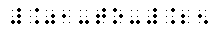

BRL: Braille through Remote Learning
Specialized Codes Course
Home
Session Topics
Orientation
Numerals and Indicator
Punctuation
Signs of Operation
Signs of Comparison
Decimal Point
Monetary
Signs of Omission
Plurals
Ordinals
Format
Evaluation
Reading Exercise
Writing Exercise
Other Resources
Send mail to ©laß
|
©hoose LANGUAGE bArd fr©Ide
DECIMAL POINT |


| Decimal Point |
| American . |
 |
| Continental , |
|
|
Use of the Decimal Point: Although the symbols for the American and Continental decimal points differ in print, the difference is not shown in braille. A transcriber's note should be included at the beginning of the braille text to inform the reader of the Continental usage in the ink-print edition.
In a numeral, no space should be left between the decimal point and the digits to which in applies.
- Is 1.306 less than 1.31?
- 3.05 x 3.7 = 11.285
- 3,14
(the continental decimal point is shown in print)
The Decimal Point and the Numeric Indicator:
- The numeric indicator must be used before the decimal point preceding a numeral when the decimal point follows a space or begins a braille line. The numeric indicator must also be used before a decimal point which follows any punctuation mark other than a hyphen connecting two mathematical expressions.
- .6 is the square root of .36.
- .7 > .1
- 5 x .03 = .15
- .50 + .17 + 1.50 = 2.17
- ".8 is a decimal fraction."
- .01-to-.25

- List the numerals from .01-.25.
- The numeric indicator must be placed between the minus sign and a decimal point preceding a numeral when the minus sign begins a braille line, or follows a space or punctuation mark.
- -.32 + .98= +.66
- Add -.75 and -.18
- .69 - .73 = -.04
- The tolerance is ±.005, not -.005.
- Is "-.55" the correct answer?
|
|
 Tჸe $_hodor bARionlegitim@.
Tჸe $_hodor bARionlegitim@.